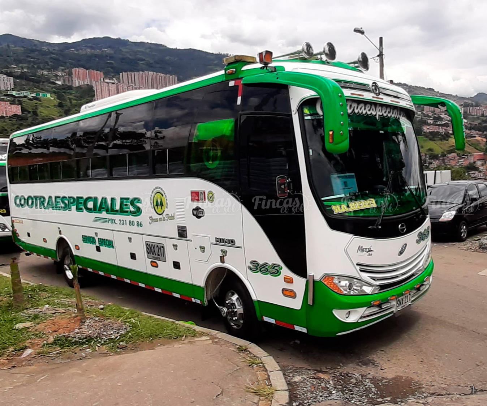

Sobre nosotros
TransMarimba es una empresa líder en transporte intermunicipal en Antioquia. Ofrecemos servicios seguros, confiables y cómodos para conectar a las personas con sus destinos.
Misión
En TransMarimba, nos comprometemos a ofrecer servicios de transporte seguros, eficientes y confiables, conectando personas y mercancías a través de soluciones innovadoras y sostenibles. Nuestro objetivo es superar las expectativas de nuestros clientes mediante un servicio excepcional, fomentando el desarrollo económico y social de las comunidades que servimos.
Visión
Ser la empresa líder en el sector del transporte, reconocida por nuestra excelencia operativa, innovación tecnológica y compromiso con la sostenibilidad. Aspiramos a establecer nuevos estándares en la industria, promoviendo un futuro en el que el transporte sea accesible, eficiente y respetuoso con el medio ambiente, beneficiando a todos nuestros clientes y a la sociedad en general.
Servicios
Transporte de pasajeros
Ofrecemos servicios de transporte de pasajeros en toda Antioquia, con vehículos modernos y cómodos que garantizan un viaje seguro y placentero.
Envíos de encomiendas
Ofrecemos servicios de envío de encomiendas, garantizando la entrega segura y a tiempo de tus paquetes y documentos.
Destinos
Conectamos a nuestros pasajeros con los principales destinos de Antioquia, asegurando llegadas puntuales y un servicio confiable.
Medellín

Medellín, conocida como la ciudad de la eterna primavera, ofrece una gran variedad de actividades culturales, comerciales y recreativas.
Envigado

Envigado es un municipio conocido por su calidad de vida, parques y zonas verdes, ideal para familias y actividades al aire libre.
Rionegro

Rionegro, ubicado en el Oriente Antioqueño, es un importante centro industrial y comercial, además de ser hogar del Aeropuerto Internacional José María Córdova.